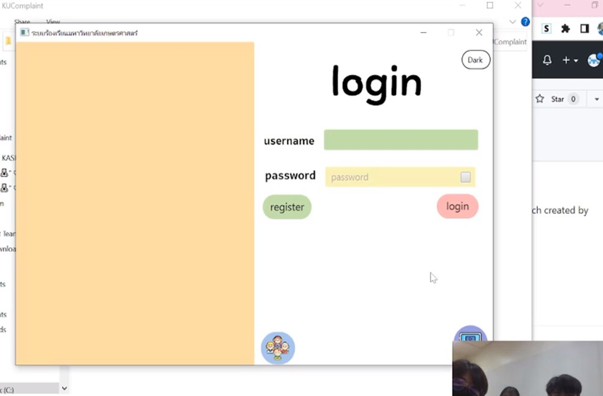
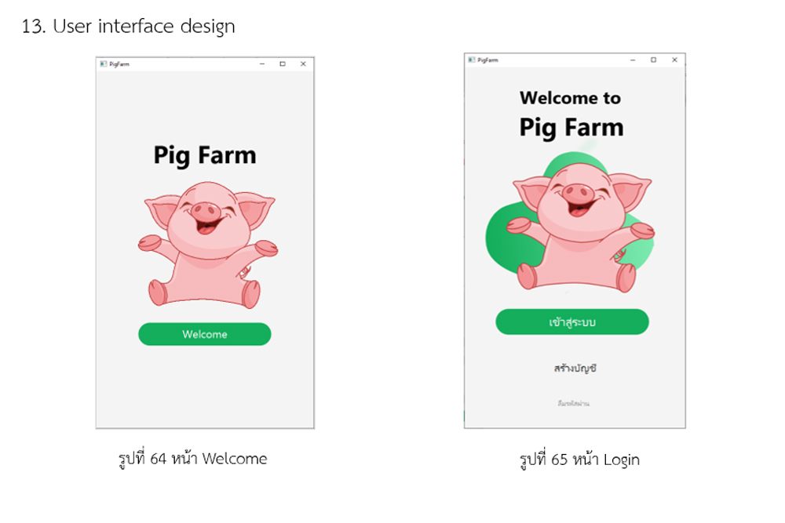
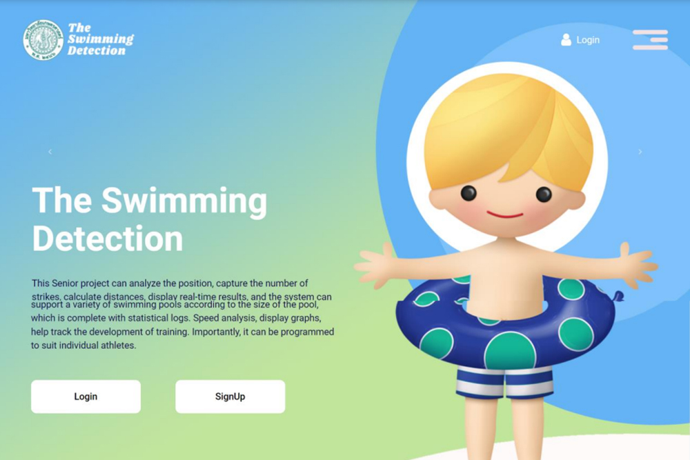
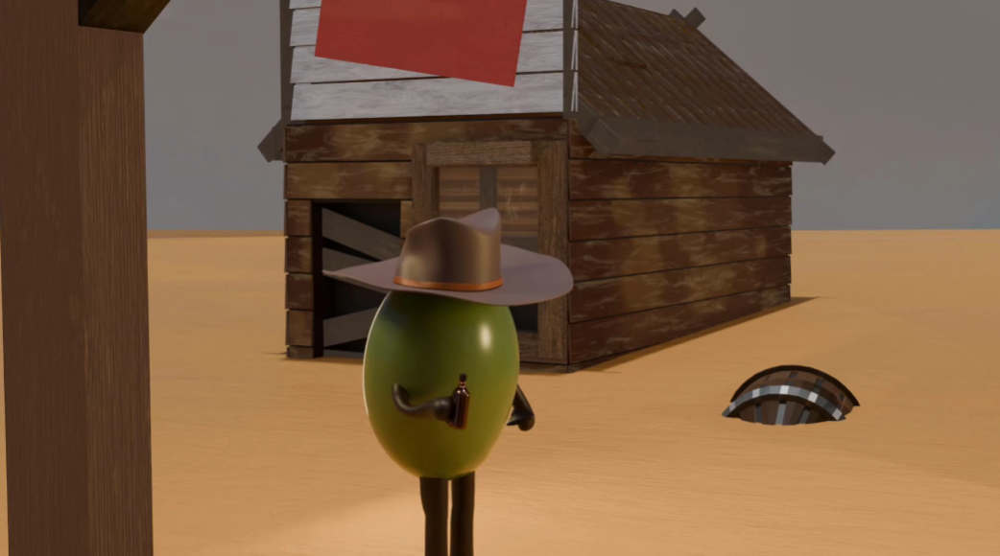
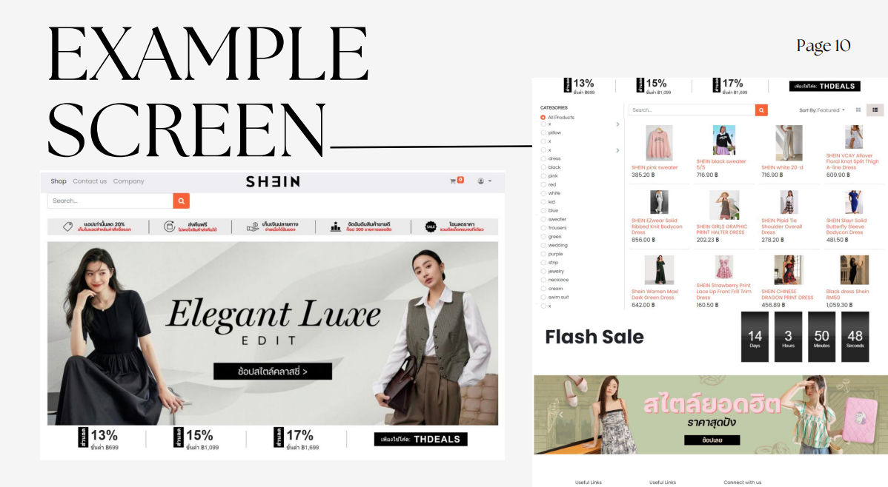
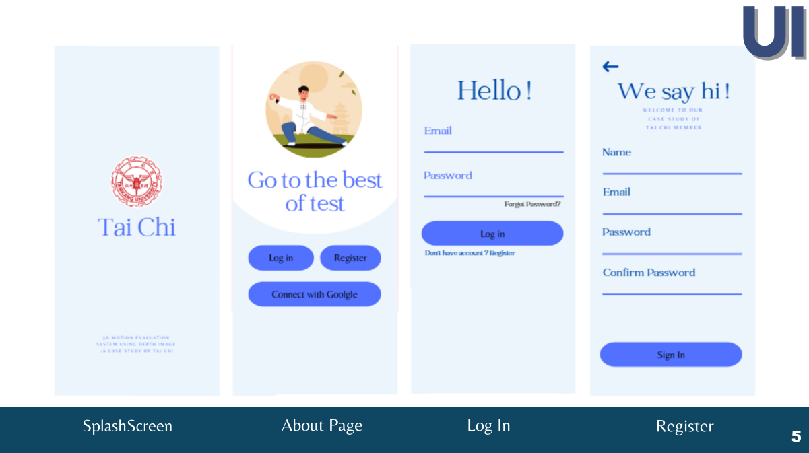
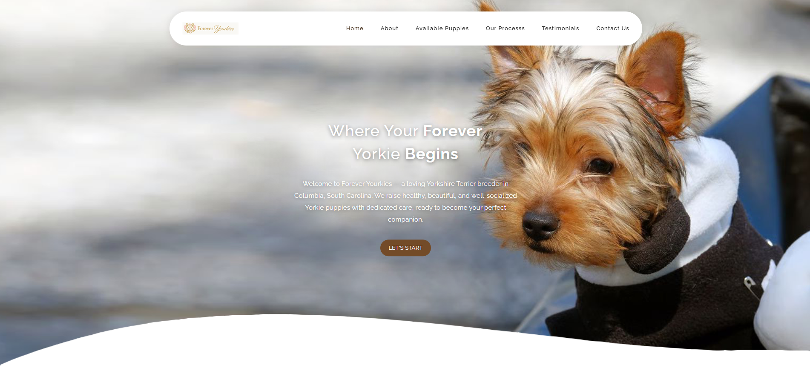

All projects were developed from the ground up, either individually or in small teams of 2–4 members. I contributed across the full development lifecycle, including project planning, task coordination, long-term system design, UI/UX design, front-end development, and testing to ensure quality and usability.

❤︎ Sep, 2022 - Oct, 2022
❤︎ Designed and developed a university complaint management system from scratch using Java and Scene Builder.
❤︎ My responsibilities included system planning, UI design, front-end development, implementing role-based access for different user types, and testing system functionality to ensure reliable complaint tracking and management.
❤︎ Sep, 2022 - Oct, 2022
❤︎ An university complaint management system developed using Java and Scene Builder, allowing students, officers, and admins to submit and manage complaints systematically

❤︎ Jul, 2023 - Nov, 2023
❤︎ Developed a pig farm management system using Java and Scene Builder to handle livestock and sales data.
❤︎ I was responsible for project planning, UI/UX design, front-end implementation, data management features, and system testing to support efficient farm operations.
❤︎ A pig farming system developed using Java and Scene Builder to record pig and sales data.
including tracking crucial information about pigs, breeding, feeding, and overall farm management.

❤︎ Nov, 2023 - Jun, 2024
❤︎ Built a swimming stroke detection system using Python, OpenCV, and MediaPipe for real-time motion analysis.
❤︎ My role involved designing the system workflow, implementing computer vision logic, developing data visualization outputs, creating and coding the web interface, and testing the system for accuracy and performance.
❤︎ Uses Python, OpenCV for real-time vision, Mediapipe for ML, NumPy for arrays, and Matplotlib for plotting graphs and html, css for website.

❤︎ Sep, 2023 - Mar, 2024
❤︎ This project explores the fundamentals of computer animation through a short animated narrative. The story follows an olive character dressed as a cowboy, walking through a hot desert environment, emphasizing atmosphere, motion, and environmental storytelling.
❤︎ My responsibilities included project planning, creating the desert sand environment, designing and building background assets, simulating wind effects to enhance realism, rendering the final animation, and editing sound effects to support the overall mood and narrative.

❤︎ Sep, 2023 - Mar, 2024
❤︎ This project strengthened my understanding of system workflows, data flow, and cross-functional processes in large-scale e-commerce platforms, providing a strong foundation for software testing, system analysis, and quality assurance roles.
❤︎ My responsibilities included designing example UI screens, analyzing system strengths and limitations, and proposing system-level improvements. I also analyzed data flow and operational workflows across the full e-commerce process, including customer ordering, production, inventory management, shipping, accounting, and customer service operations.

❤︎ Sep, 2024 - Jan, 2025
❤︎ Built a swimming stroke detection system using Python, OpenCV, and MediaPipe for real-time motion analysis.
❤︎ My role involved designing the system workflow, implementing computer vision logic, developing data visualization outputs, creating and coding the web interface, and testing the system for accuracy and performance.

❤︎ Feb, 2026 - Mar, 2026
❤︎ This project involved designing and developing a complete website for a Yorkshire Terrier breeder business. The website was created to showcase available puppies, breeder information, customer testimonials, and contact services through a professional and visually appealing online presence.
❤︎ I was responsible for the entire development process, including planning the website structure, designing the user interface and user experience (UI/UX), creating visual layouts, developing responsive web pages using HTML, CSS, and JavaScript, integrating content, and testing the website across multiple devices to ensure functionality and usability.